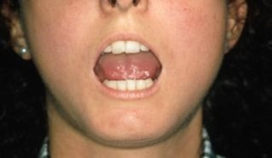
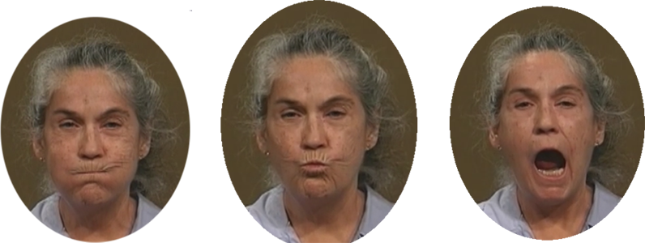
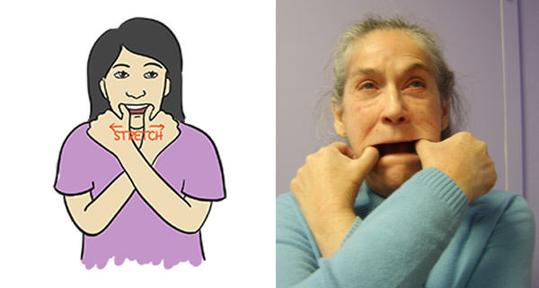

Module: Mouth and Teeth Care
Janet L. Poole, PhD, OTR/L with input from David M. Leader, DMD, MPH
Oral Exercises
Sometimes it can be very hard to open your mouth and brush all the parts of your teeth. It can also be very hard for the dentist and dental hygienist to work in your mouth.
Before brushing your teeth or just before the dentist/hygienist examines you, there are several exercises you can do to try to stretch your mouth. They are explained in this module, and you can refer to the videos at the bottom of this page.
Why should I do exercises for my face and mouth?
In scleroderma, the skin on the face becomes tight and shiny and results in a mask-like appearance and decreased mouth opening, or microstomia. Being able to open your mouth is important to be able to eat, talk, brush and floss your teeth, and have the dentist work on your teeth.
Exercises to stretch the mouth and face
- Exaggerated facial movements consist of pursing the lips, puffing out the cheeks, smiling, and making other expressions in an exaggerated fashion. These exercises can be done in the shower under warm water. 
- Manual stretching uses the hands to stretch the oral tissues. The photo below shows manual stretching. The right thumb is placed in the corner of the left side of the mouth while the left thumb is placed in the corner of the right side of the mouth. The mouth is stretched to the sides by the thumbs. This is a good exercise to do in the shower under warm water. 
- Oral augmentation consists of inserting tongue depressors between the teeth from the front of the left side of the mouth to the back of the right side of the mouth (see photo). The position is held for several seconds. The tongue depressors should be held together with a rubber band. You may only be able to do this exercise with a few tongue depressors. Additional tongue depressors can be added as motion increases. Do this exercise sitting.
- Individuals with systemic sclerosis can monitor their own mouth opening by marking the distance between the upper and lower teeth on an index card. The card can be held up to the teeth while standing in front of a mirror.